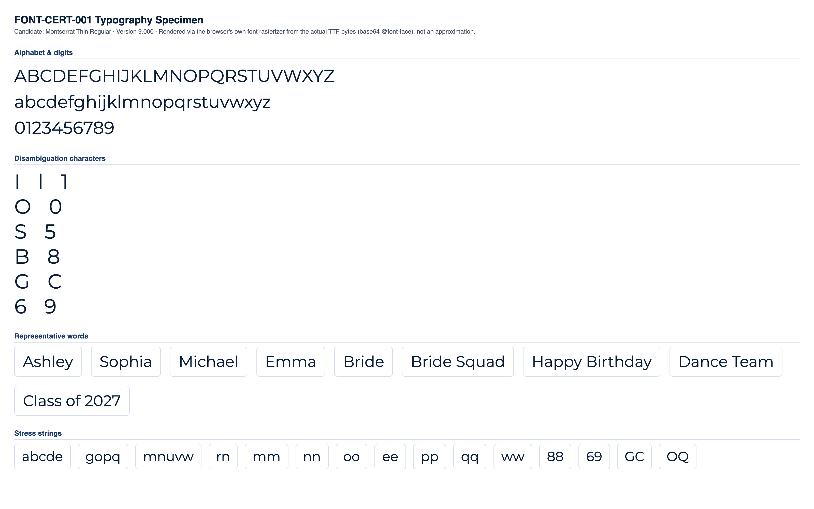

CONDITIONAL PASS
Classification and the feedback below are computed at the mid-range letter height for each stone size (the representative case). Full min/mid/max data is shown in section 4.
No blocking issues found.
Min and max height produce no more collisions or low-stone-count findings than mid height.
Medium
No blocking production failures, but 14 refinement note(s) were found (11 actionable item(s) below) -- readability, spacing, or anatomy concerns that would need addressing for production quality.
| Status | Check | Category | Detail |
|---|---|---|---|
| PASS | Successful TTF parsing | parsing | opentype.js parsed the file without error. |
| PASS | Outline format | structure | TrueType (quadratic) outlines. sfnt signature "0x00010000", opentype.js outlinesFormat="truetype". |
| PASS | Quadratic TrueType outlines | structure | TrueType file with quadratic curves confirmed: 85 curve commands found across 10 sampled glyphs. |
| PASS | unitsPerEm | structure | unitsPerEm = 1000 |
| PASS | Glyph count | structure | 2747 glyphs (font.numGlyphs=2747). |
| PASS | .notdef at glyph index 0 | structure | .notdef confirmed at glyph index 0. |
| PASS | Unicode cmap coverage | coverage | cmap maps 1312 Unicode code point(s) to glyphs. |
| PASS | Required character coverage (A-Z, a-z, 0-9, space, . , ' - ! ?) | coverage | All 69 required characters map to a real glyph (glyph index != 0). |
| PASS | Required sfnt tables | structure | All required tables present: cmap, glyf, head, hhea, hmtx, loca, maxp, name, post, OS/2. |
| PASS | Family / subfamily / version / PostScript naming | naming | family="Montserrat Thin", subfamily="Regular", version="Version 9.000", postScriptName="Montserrat-Thin". |
| PASS | Ascender, descender, line gap, horizontal metrics | metrics | ascender=968, descender=-251, hhea.lineGap=0, advanceWidthMax=1566, numberOfHMetrics=2747 (hmtx table present: true). |
| PASS | Invalid or empty glyphs | geometry | No mapped, non-whitespace, non-invisible-by-design character resolves to an empty outline. |
| PASS | Open contours | geometry | Every required-character contour closes explicitly (an explicit "Z"/closepath command) or implicitly (its final point returns to its starting point). |
| WARNING | Self-intersections | geometry | 47 of 69 character(s) show 108 total crossing(s) (small counts: 1-4 per affected character) -- "A" (self:1, cross-contour:4), "B" (self:2, cross-contour:0), "E" (self:0, cross-contour:2), "F" (self:0, cross-contour:2), "G" (self:0, cross-contour:1), "H" (self:0, cross-contour:4), "K" (self:0, cross-contour:4), "M" (self:3, cross-contour:0), "N" (self:2, cross-contour:0), "P" (self:3, cross-contour:0), "Q" (self:0, cross-contour:1), "R" (self:3, cross-contour:2), "V" (self:1, cross-contour:0), "W" (self:3, cross-contour:0), "X" (self:4, cross-contour:0), "Y" (self:3, cross-contour:0), "Z" (self:2, cross-contour:0), "a" (self:0, cross-contour:3), "b" (self:0, cross-contour:2), "d" (self:0, cross-contour:2), "e" (self:2, cross-contour:0), "f" (self:0, cross-contour:4), "g" (self:0, cross-contour:2), "h" (self:1, cross-contour:0), "k" (self:0, cross-contour:4), "m" (self:2, cross-contour:0), "n" (self:1, cross-contour:0), "p" (self:0, cross-contour:2), "q" (self:0, cross-contour:2), "r" (self:1, cross-contour:0), "t" (self:0, cross-contour:4), "u" (self:1, cross-contour:0), "v" (self:1, cross-contour:0), "w" (self:3, cross-contour:0), "x" (self:4, cross-contour:0), "y" (self:0, cross-contour:2), "z" (self:2, cross-contour:0), "1" (self:1, cross-contour:0), "2" (self:1, cross-contour:0), "3" (self:2, cross-contour:0), "4" (self:1, cross-contour:2), "5" (self:2, cross-contour:0), "6" (self:1, cross-contour:0), "7" (self:2, cross-contour:0), "8" (self:0, cross-contour:2), "9" (self:1, cross-contour:0), "," (self:1, cross-contour:0). Not production-blocking on its own (verify visually against rhinestone-specimen.png/typography-specimen.png -- a transversal crossing in the outline does not necessarily produce a visible defect once converted to stones). |
| WARNING | Zero-length or duplicate outline segments | geometry | 42 of 69 character(s) contain 300 raw zero-length draw command(s) total (a command whose endpoint exactly duplicates the current pen position -- draws nothing, harmless no-op, but real source-file redundancy), 0 duplicate outline segments. Not production-blocking: these commands have no visual or geometric effect. Per-character counts: "B" (zero-length:8, duplicate:0), "C" (zero-length:8, duplicate:0), "D" (zero-length:4, duplicate:0), "G" (zero-length:8, duplicate:0), "J" (zero-length:4, duplicate:0), "O" (zero-length:8, duplicate:0), "P" (zero-length:4, duplicate:0), "Q" (zero-length:12, duplicate:0), +34 more. |
| PASS | Coordinates outside valid TrueType ranges | geometry | All required-character outline coordinates fall within the signed 16-bit range (-32768 to 32767). |
| PASS | Inconsistent or suspicious advance widths / side bearings | metrics | Advance widths for required characters cluster reasonably around the median (610 units). |
Rendered from the actual source TTF via a base64-embedded @font-face rule (typography), and through the real production pipeline FontManager → OpenTypeProvider → GeometryEngine.generateTextLayout() → StoneLayout (rhinestone), at this milestone's own physical letter-height range per stone size:
| Stone size | Min | Mid (representative) | Max |
|---|---|---|---|
| SS6 | 35mm | 42.5mm | 50mm |
| SS10 | 45mm | 52.5mm | 60mm |
| SS16 | 65mm | 77.5mm | 90mm |
| SS20 | 80mm | 95mm | 110mm |
| SS30 | 106mm | 108.5mm | 111mm |


Successful layout generation (a non-empty StoneLayout with no collisions) is not the same as visual readability -- see each height variant's readability metrics below for objective, threshold-based findings.
| SS6 | text height: 35mm |
|---|---|
| SS10 | text height: 45mm |
| SS16 | text height: 65mm |
| SS20 | text height: 80mm |
| SS30 | text height: 106mm |
| Pair | Size | Stone counts | Chamfer distance | Result |
|---|---|---|---|---|
| "I" vs "l" | SS16 | 10 / 11 | 0.0235 | WARNING |
| "l" vs "1" | SS16 | 11 / 12 | 0.0899 | WARNING |
| "I" vs "1" | SS16 | 10 / 12 | 0.0925 | PASS |
| "O" vs "0" | SS16 | 34 / 30 | 0.0680 | WARNING |
| "S" vs "5" | SS16 | 26 / 25 | 0.0353 | WARNING |
| "B" vs "8" | SS16 | 40 / 34 | 0.0476 | WARNING |
| "G" vs "C" | SS16 | 28 / 25 | 0.0259 | WARNING |
| "Q" vs "O" | SS16 | 39 / 34 | 0.0755 | WARNING |
| "e" vs "c" | SS16 | 26 / 18 | 0.0970 | PASS |
| "e" vs "o" | SS16 | 26 / 24 | 0.0581 | WARNING |
| "c" vs "o" | SS16 | 18 / 24 | 0.0818 | WARNING |
| "6" vs "9" | SS16 | 32 / 31 | 0.0706 | WARNING |
Threshold: 0.09 (normalized, unit-height point clouds). Below threshold = flagged as visually similar.
| Char | SS6 | SS10 | SS16 | SS20 | SS30 |
|---|---|---|---|---|---|
| "A" | 29 | 27 | 29 | 30 | 30 |
| "B" | 39 | 36 | 40 | 42 | 39 |
| "C" | 25 | 24 | 25 | 26 | 25 |
| "D" | 35 | 33 | 34 | 36 | 35 |
| "E" | 30 | 29 | 30 | 30 | 30 |
| "F" | 23 | 21 | 22 | 23 | 23 |
| "G" | 29 | 27 | 28 | 30 | 30 |
| "H" | 29 | 26 | 27 | 28 | 28 |
| "I" | 11 | 10 | 10 | 11 | 11 |
| "J" | 19 | 18 | 18 | 20 | 18 |
| "K" | 29 | 26 | 25 | 27 | 27 |
| "L" | 17 | 16 | 17 | 19 | 18 |
| "M" | 39 | 37 | 37 | 41 | 41 |
| "N" | 32 | 31 | 31 | 33 | 33 |
| "O" | 34 | 32 | 34 | 36 | 35 |
| "P" | 29 | 27 | 28 | 30 | 29 |
| "Q" | 39 | 37 | 39 | 41 | 40 |
| "R" | 34 | 30 | 31 | 34 | 33 |
| "S" | 26 | 26 | 26 | 28 | 28 |
| "T" | 18 | 17 | 17 | 19 | 18 |
| "U" | 26 | 25 | 26 | 26 | 26 |
| "V" | 24 | 21 | 22 | 24 | 23 |
| "W" | 41 | 40 | 41 | 44 | 43 |
| "X" | 26 | 24 | 25 | 28 | 26 |
| "Y" | 19 | 19 | 19 | 20 | 20 |
| "Z" | 28 | 28 | 28 | 30 | 29 |
| "a" | 25 | 24 | 25 | 26 | 26 |
| "b" | 30 | 29 | 30 | 31 | 31 |
| "c" | 18 | 19 | 18 | 20 | 19 |
| "d" | 29 | 28 | 29 | 31 | 31 |
| "e" | 27 | 25 | 26 | 28 | 28 |
| "f" | 18 | 17 | 18 | 19 | 19 |
| "g" | 35 | 32 | 34 | 36 | 37 |
| "h" | 24 | 23 | 24 | 26 | 26 |
| "i" | 9 | 8 | 9 | 9 | 9 |
| "j" | 14 | 13 | 13 | 14 | 14 |
| "k" | 24 | 24 | 23 | 25 | 24 |
| "l" | 11 | 11 | 11 | 12 | 12 |
| "m" | 34 | 32 | 33 | 35 | 34 |
| "n" | 21 | 19 | 21 | 22 | 21 |
| "o" | 24 | 23 | 24 | 26 | 25 |
| "p" | 30 | 28 | 30 | 30 | 30 |
| "q" | 29 | 27 | 28 | 30 | 30 |
| "r" | 11 | 10 | 11 | 11 | 11 |
| "s" | 21 | 20 | 21 | 21 | 22 |
| "t" | 16 | 16 | 16 | 17 | 17 |
| "u" | 22 | 19 | 20 | 22 | 21 |
| "v" | 18 | 16 | 16 | 17 | 17 |
| "w" | 30 | 29 | 30 | 31 | 32 |
| "x" | 19 | 17 | 18 | 20 | 20 |
| "y" | 23 | 20 | 22 | 24 | 24 |
| "z" | 21 | 20 | 21 | 21 | 21 |
| "0" | 30 | 28 | 30 | 31 | 31 |
| "1" | 13 | 12 | 12 | 13 | 13 |
| "2" | 25 | 24 | 25 | 26 | 26 |
| "3" | 24 | 23 | 24 | 26 | 26 |
| "4" | 22 | 21 | 22 | 23 | 23 |
| "5" | 26 | 23 | 25 | 27 | 26 |
| "6" | 33 | 31 | 32 | 33 | 33 |
| "7" | 19 | 18 | 18 | 20 | 20 |
| "8" | 34 | 33 | 34 | 36 | 36 |
| "9" | 31 | 30 | 31 | 33 | 32 |
Cell values are stone count per glyph at that stone size ("coll." = colliding stone pairs found).
| Word | SS6 | SS10 | SS16 | SS20 | SS30 |
|---|---|---|---|---|---|
| Ashley | 135 stones, min spacing 2.03mm, 8 cluster(s) | 126 stones, min spacing 3.01mm, 8 cluster(s) | 133 stones, min spacing 4.15mm, 7 cluster(s) | 141 stones, min spacing 4.87mm, 9 cluster(s) | 142 stones, min spacing 6.45mm, 8 cluster(s) |
| Sophia | 138 stones, min spacing 2.19mm, 11 cluster(s) | 132 stones, min spacing 2.97mm, 11 cluster(s) | 138 stones, min spacing 4.04mm, 11 cluster(s) | 145 stones, min spacing 4.87mm, 11 cluster(s) | 144 stones, min spacing 6.61mm, 10 cluster(s) |
| Michael | 153 stones, min spacing 2.07mm, 14 cluster(s) | 147 stones, min spacing 2.83mm, 13 cluster(s) | 150 stones, min spacing 4.04mm, 13 cluster(s) | 162 stones, min spacing 4.84mm, 14 cluster(s) | 161 stones, min spacing 6.44mm, 13 cluster(s) |
| Emma | 123 stones, min spacing 2.01mm, 6 cluster(s) | 117 stones, min spacing 2.85mm, 6 cluster(s) | 121 stones, min spacing 4.04mm, 8 cluster(s) | 126 stones, min spacing 4.94mm, 10 cluster(s) | 124 stones, min spacing 6.61mm, 8 cluster(s) |
| Bride | 115 stones, min spacing 2.06mm, 10 cluster(s) | 107 stones, min spacing 3.07mm, 8 cluster(s) | 115 stones, min spacing 4.01mm, 9 cluster(s) | 121 stones, min spacing 4.77mm, 10 cluster(s) | 118 stones, min spacing 6.65mm, 10 cluster(s) |
| Bride Squad | 246 stones, min spacing 2.03mm, 18 cluster(s) | 231 stones, min spacing 2.97mm, 14 cluster(s) | 243 stones, min spacing 4.01mm, 18 cluster(s) | 258 stones, min spacing 4.77mm, 18 cluster(s) | 254 stones, min spacing 6.61mm, 18 cluster(s) |
| Happy Birthday | 313 stones, min spacing 2.03mm, 22 cluster(s) | 291 stones, min spacing 2.81mm, 22 cluster(s) | 310 stones, min spacing 4.01mm, 23 cluster(s) | 324 stones, min spacing 4.77mm, 27 cluster(s) | 321 stones, min spacing 6.45mm, 24 cluster(s) |
| Dance Team | 230 stones, min spacing 2.01mm, 16 cluster(s) | 218 stones, min spacing 2.83mm, 13 cluster(s) | 225 stones, min spacing 4.04mm, 14 cluster(s) | 240 stones, min spacing 4.75mm, 18 cluster(s) | 235 stones, min spacing 6.61mm, 16 cluster(s) |
| Class of 2027 | 244 stones, min spacing 2.23mm, 14 cluster(s) | 233 stones, min spacing 2.87mm, 14 cluster(s) | 243 stones, min spacing 4.04mm, 15 cluster(s) | 254 stones, min spacing 4.84mm, 18 cluster(s) | 254 stones, min spacing 6.52mm, 14 cluster(s) |
No glyph/size combination falls below the minimum meaningful stone count.
No counter-bearing glyph/size combination falls below the counter-bearing stone-count floor.
| Pair | Size | Chamfer distance | Stone counts |
|---|---|---|---|
| "I" vs "l" | SS6 | 0.0022 | 11 / 11 |
| "l" vs "1" | SS6 | 0.0843 | 11 / 13 |
| "I" vs "1" | SS6 | 0.0841 | 11 / 13 |
| "O" vs "0" | SS6 | 0.0685 | 34 / 30 |
| "S" vs "5" | SS6 | 0.0349 | 26 / 26 |
| "B" vs "8" | SS6 | 0.0526 | 39 / 34 |
| "G" vs "C" | SS6 | 0.0236 | 29 / 25 |
| "Q" vs "O" | SS6 | 0.0751 | 39 / 34 |
| "e" vs "o" | SS6 | 0.0546 | 27 / 24 |
| "c" vs "o" | SS6 | 0.0865 | 18 / 24 |
| "6" vs "9" | SS6 | 0.0675 | 33 / 31 |
| "I" vs "l" | SS10 | 0.0235 | 10 / 11 |
| "O" vs "0" | SS10 | 0.0707 | 32 / 28 |
| "S" vs "5" | SS10 | 0.0383 | 26 / 23 |
| "B" vs "8" | SS10 | 0.0496 | 36 / 33 |
| "G" vs "C" | SS10 | 0.0242 | 27 / 24 |
| "Q" vs "O" | SS10 | 0.0749 | 37 / 32 |
| "e" vs "c" | SS10 | 0.0783 | 25 / 19 |
| "e" vs "o" | SS10 | 0.0600 | 25 / 23 |
| "c" vs "o" | SS10 | 0.0662 | 19 / 23 |
| "6" vs "9" | SS10 | 0.0687 | 31 / 30 |
| "I" vs "l" | SS16 | 0.0235 | 10 / 11 |
| "l" vs "1" | SS16 | 0.0899 | 11 / 12 |
| "O" vs "0" | SS16 | 0.0680 | 34 / 30 |
| "S" vs "5" | SS16 | 0.0353 | 26 / 25 |
| "B" vs "8" | SS16 | 0.0476 | 40 / 34 |
| "G" vs "C" | SS16 | 0.0259 | 28 / 25 |
| "Q" vs "O" | SS16 | 0.0755 | 39 / 34 |
| "e" vs "o" | SS16 | 0.0581 | 26 / 24 |
| "c" vs "o" | SS16 | 0.0818 | 18 / 24 |
| "6" vs "9" | SS16 | 0.0706 | 32 / 31 |
| "I" vs "l" | SS20 | 0.0215 | 11 / 12 |
| "O" vs "0" | SS20 | 0.0706 | 36 / 31 |
| "S" vs "5" | SS20 | 0.0343 | 28 / 27 |
| "B" vs "8" | SS20 | 0.0488 | 42 / 36 |
| "G" vs "C" | SS20 | 0.0273 | 30 / 26 |
| "Q" vs "O" | SS20 | 0.0739 | 41 / 36 |
| "e" vs "o" | SS20 | 0.0586 | 28 / 26 |
| "c" vs "o" | SS20 | 0.0749 | 20 / 26 |
| "6" vs "9" | SS20 | 0.0705 | 33 / 33 |
| "I" vs "l" | SS30 | 0.0215 | 11 / 12 |
| "O" vs "0" | SS30 | 0.0696 | 35 / 31 |
| "S" vs "5" | SS30 | 0.0344 | 28 / 26 |
| "B" vs "8" | SS30 | 0.0497 | 39 / 36 |
| "G" vs "C" | SS30 | 0.0521 | 30 / 25 |
| "Q" vs "O" | SS30 | 0.0744 | 40 / 35 |
| "e" vs "c" | SS30 | 0.0887 | 28 / 19 |
| "e" vs "o" | SS30 | 0.0521 | 28 / 25 |
| "c" vs "o" | SS30 | 0.0804 | 19 / 25 |
| "6" vs "9" | SS30 | 0.0692 | 33 / 32 |
| Size | Diameter | Scale | Rendered stone size | Result |
|---|---|---|---|---|
| SS6 | 2mm | 5px/mm | 10px | PASS |
| SS10 | 2.8mm | 4px/mm | 11.2px | PASS |
| SS16 | 4mm | 3.5px/mm | 14px | PASS |
| SS20 | 4.7mm | 3px/mm | 14.1px | PASS |
| SS30 | 6.4mm | 2.5px/mm | 16px | PASS |
| SS6 | text height: 42.5mm |
|---|---|
| SS10 | text height: 52.5mm |
| SS16 | text height: 77.5mm |
| SS20 | text height: 95mm |
| SS30 | text height: 108.5mm |
| Pair | Size | Stone counts | Chamfer distance | Result |
|---|---|---|---|---|
| "I" vs "l" | SS16 | 13 / 13 | 0.0010 | WARNING |
| "l" vs "1" | SS16 | 13 / 16 | 0.1052 | PASS |
| "I" vs "1" | SS16 | 13 / 16 | 0.1052 | PASS |
| "O" vs "0" | SS16 | 40 / 35 | 0.0735 | WARNING |
| "S" vs "5" | SS16 | 31 / 29 | 0.0307 | WARNING |
| "B" vs "8" | SS16 | 48 / 41 | 0.0487 | WARNING |
| "G" vs "C" | SS16 | 34 / 30 | 0.0235 | WARNING |
| "Q" vs "O" | SS16 | 46 / 40 | 0.0723 | WARNING |
| "e" vs "c" | SS16 | 32 / 22 | 0.0890 | WARNING |
| "e" vs "o" | SS16 | 32 / 29 | 0.0595 | WARNING |
| "c" vs "o" | SS16 | 22 / 29 | 0.0767 | WARNING |
| "6" vs "9" | SS16 | 38 / 37 | 0.0695 | WARNING |
Threshold: 0.09 (normalized, unit-height point clouds). Below threshold = flagged as visually similar.
| Char | SS6 | SS10 | SS16 | SS20 | SS30 |
|---|---|---|---|---|---|
| "A" | 35 | 31 | 34 | 36 | 30 |
| "B" | 47 | 44 | 48 | 50 | 40 |
| "C" | 30 | 28 | 30 | 31 | 27 |
| "D" | 42 | 38 | 40 | 44 | 36 |
| "E" | 36 | 33 | 36 | 36 | 31 |
| "F" | 27 | 24 | 28 | 28 | 24 |
| "G" | 34 | 31 | 34 | 36 | 30 |
| "H" | 35 | 32 | 34 | 35 | 28 |
| "I" | 13 | 12 | 13 | 13 | 11 |
| "J" | 23 | 21 | 20 | 24 | 20 |
| "K" | 34 | 30 | 32 | 34 | 27 |
| "L" | 22 | 19 | 20 | 21 | 18 |
| "M" | 48 | 44 | 46 | 48 | 39 |
| "N" | 39 | 36 | 39 | 40 | 32 |
| "O" | 41 | 38 | 40 | 42 | 36 |
| "P" | 35 | 32 | 35 | 36 | 30 |
| "Q" | 48 | 44 | 46 | 50 | 42 |
| "R" | 41 | 36 | 39 | 41 | 34 |
| "S" | 33 | 29 | 31 | 33 | 28 |
| "T" | 22 | 20 | 22 | 21 | 18 |
| "U" | 32 | 29 | 31 | 32 | 28 |
| "V" | 28 | 25 | 26 | 29 | 23 |
| "W" | 52 | 46 | 50 | 53 | 45 |
| "X" | 30 | 28 | 30 | 32 | 27 |
| "Y" | 23 | 22 | 23 | 23 | 20 |
| "Z" | 34 | 32 | 33 | 36 | 31 |
| "a" | 30 | 28 | 30 | 31 | 26 |
| "b" | 38 | 34 | 36 | 38 | 32 |
| "c" | 23 | 21 | 22 | 23 | 19 |
| "d" | 38 | 33 | 36 | 37 | 32 |
| "e" | 33 | 30 | 32 | 34 | 29 |
| "f" | 21 | 20 | 21 | 22 | 19 |
| "g" | 41 | 39 | 42 | 43 | 36 |
| "h" | 30 | 28 | 29 | 30 | 26 |
| "i" | 11 | 10 | 10 | 11 | 9 |
| "j" | 18 | 15 | 17 | 17 | 15 |
| "k" | 30 | 27 | 28 | 28 | 24 |
| "l" | 14 | 13 | 13 | 14 | 12 |
| "m" | 41 | 38 | 40 | 42 | 35 |
| "n" | 27 | 24 | 25 | 27 | 22 |
| "o" | 30 | 27 | 29 | 30 | 26 |
| "p" | 37 | 33 | 36 | 36 | 31 |
| "q" | 36 | 33 | 35 | 36 | 31 |
| "r" | 15 | 13 | 13 | 14 | 11 |
| "s" | 26 | 23 | 25 | 26 | 21 |
| "t" | 19 | 18 | 18 | 19 | 17 |
| "u" | 26 | 24 | 24 | 26 | 22 |
| "v" | 20 | 19 | 20 | 20 | 18 |
| "w" | 38 | 35 | 37 | 37 | 33 |
| "x" | 23 | 21 | 22 | 22 | 19 |
| "y" | 28 | 25 | 27 | 28 | 24 |
| "z" | 25 | 22 | 24 | 25 | 20 |
| "0" | 36 | 33 | 35 | 37 | 32 |
| "1" | 15 | 14 | 16 | 16 | 13 |
| "2" | 31 | 29 | 30 | 30 | 27 |
| "3" | 32 | 28 | 29 | 31 | 26 |
| "4" | 28 | 26 | 27 | 29 | 24 |
| "5" | 32 | 29 | 29 | 32 | 27 |
| "6" | 40 | 37 | 38 | 40 | 35 |
| "7" | 24 | 22 | 23 | 25 | 20 |
| "8" | 43 | 39 | 41 | 44 | 37 |
| "9" | 38 | 34 | 37 | 39 | 32 |
Cell values are stone count per glyph at that stone size ("coll." = colliding stone pairs found).
| Word | SS6 | SS10 | SS16 | SS20 | SS30 |
|---|---|---|---|---|---|
| Ashley | 166 stones, min spacing 2.11mm, 7 cluster(s) | 150 stones, min spacing 2.82mm, 9 cluster(s) | 160 stones, min spacing 4.03mm, 7 cluster(s) | 168 stones, min spacing 4.92mm, 9 cluster(s) | 142 stones, min spacing 6.41mm, 8 cluster(s) |
| Sophia | 171 stones, min spacing 2.06mm, 11 cluster(s) | 155 stones, min spacing 2.82mm, 12 cluster(s) | 165 stones, min spacing 4.07mm, 11 cluster(s) | 171 stones, min spacing 4.95mm, 12 cluster(s) | 146 stones, min spacing 6.62mm, 11 cluster(s) |
| Michael | 189 stones, min spacing 2.01mm, 13 cluster(s) | 174 stones, min spacing 2.82mm, 14 cluster(s) | 182 stones, min spacing 4.07mm, 13 cluster(s) | 191 stones, min spacing 4.96mm, 15 cluster(s) | 160 stones, min spacing 6.62mm, 15 cluster(s) |
| Emma | 148 stones, min spacing 2.04mm, 7 cluster(s) | 137 stones, min spacing 2.82mm, 7 cluster(s) | 146 stones, min spacing 4.07mm, 10 cluster(s) | 151 stones, min spacing 4.96mm, 9 cluster(s) | 127 stones, min spacing 6.62mm, 7 cluster(s) |
| Bride | 144 stones, min spacing 2.06mm, 9 cluster(s) | 130 stones, min spacing 2.83mm, 9 cluster(s) | 139 stones, min spacing 4.10mm, 9 cluster(s) | 146 stones, min spacing 4.72mm, 9 cluster(s) | 121 stones, min spacing 6.64mm, 10 cluster(s) |
| Bride Squad | 307 stones, min spacing 2.06mm, 16 cluster(s) | 277 stones, min spacing 2.83mm, 18 cluster(s) | 295 stones, min spacing 4.07mm, 17 cluster(s) | 309 stones, min spacing 4.72mm, 18 cluster(s) | 260 stones, min spacing 6.42mm, 18 cluster(s) |
| Happy Birthday | 385 stones, min spacing 2.06mm, 25 cluster(s) | 350 stones, min spacing 2.82mm, 27 cluster(s) | 374 stones, min spacing 4.03mm, 26 cluster(s) | 386 stones, min spacing 4.72mm, 24 cluster(s) | 325 stones, min spacing 6.41mm, 28 cluster(s) |
| Dance Team | 281 stones, min spacing 2.08mm, 14 cluster(s) | 257 stones, min spacing 2.83mm, 14 cluster(s) | 273 stones, min spacing 4.07mm, 16 cluster(s) | 287 stones, min spacing 4.83mm, 17 cluster(s) | 240 stones, min spacing 6.62mm, 16 cluster(s) |
| Class of 2027 | 299 stones, min spacing 2.11mm, 15 cluster(s) | 275 stones, min spacing 2.81mm, 15 cluster(s) | 291 stones, min spacing 4.07mm, 14 cluster(s) | 302 stones, min spacing 4.86mm, 19 cluster(s) | 258 stones, min spacing 6.41mm, 18 cluster(s) |
No glyph/size combination falls below the minimum meaningful stone count.
No counter-bearing glyph/size combination falls below the counter-bearing stone-count floor.
| Pair | Size | Chamfer distance | Stone counts |
|---|---|---|---|
| "I" vs "l" | SS6 | 0.0184 | 13 / 14 |
| "O" vs "0" | SS6 | 0.0733 | 41 / 36 |
| "S" vs "5" | SS6 | 0.0310 | 33 / 32 |
| "B" vs "8" | SS6 | 0.0488 | 47 / 43 |
| "G" vs "C" | SS6 | 0.0384 | 34 / 30 |
| "Q" vs "O" | SS6 | 0.0726 | 48 / 41 |
| "e" vs "c" | SS6 | 0.0757 | 33 / 23 |
| "e" vs "o" | SS6 | 0.0558 | 33 / 30 |
| "c" vs "o" | SS6 | 0.0670 | 23 / 30 |
| "6" vs "9" | SS6 | 0.0663 | 40 / 38 |
| "I" vs "l" | SS10 | 0.0219 | 12 / 13 |
| "O" vs "0" | SS10 | 0.0724 | 38 / 33 |
| "S" vs "5" | SS10 | 0.0330 | 29 / 29 |
| "B" vs "8" | SS10 | 0.0515 | 44 / 39 |
| "G" vs "C" | SS10 | 0.0334 | 31 / 28 |
| "Q" vs "O" | SS10 | 0.0735 | 44 / 38 |
| "e" vs "c" | SS10 | 0.0848 | 30 / 21 |
| "e" vs "o" | SS10 | 0.0574 | 30 / 27 |
| "c" vs "o" | SS10 | 0.0759 | 21 / 27 |
| "6" vs "9" | SS10 | 0.0694 | 37 / 34 |
| "I" vs "l" | SS16 | 0.0010 | 13 / 13 |
| "O" vs "0" | SS16 | 0.0735 | 40 / 35 |
| "S" vs "5" | SS16 | 0.0307 | 31 / 29 |
| "B" vs "8" | SS16 | 0.0487 | 48 / 41 |
| "G" vs "C" | SS16 | 0.0235 | 34 / 30 |
| "Q" vs "O" | SS16 | 0.0723 | 46 / 40 |
| "e" vs "c" | SS16 | 0.0890 | 32 / 22 |
| "e" vs "o" | SS16 | 0.0595 | 32 / 29 |
| "c" vs "o" | SS16 | 0.0767 | 22 / 29 |
| "6" vs "9" | SS16 | 0.0695 | 38 / 37 |
| "I" vs "l" | SS20 | 0.0184 | 13 / 14 |
| "O" vs "0" | SS20 | 0.0734 | 42 / 37 |
| "S" vs "5" | SS20 | 0.0313 | 33 / 32 |
| "B" vs "8" | SS20 | 0.0491 | 50 / 44 |
| "G" vs "C" | SS20 | 0.0293 | 36 / 31 |
| "Q" vs "O" | SS20 | 0.0716 | 50 / 42 |
| "e" vs "c" | SS20 | 0.0868 | 34 / 23 |
| "e" vs "o" | SS20 | 0.0603 | 34 / 30 |
| "c" vs "o" | SS20 | 0.0719 | 23 / 30 |
| "6" vs "9" | SS20 | 0.0680 | 40 / 39 |
| "I" vs "l" | SS30 | 0.0215 | 11 / 12 |
| "O" vs "0" | SS30 | 0.0704 | 36 / 32 |
| "S" vs "5" | SS30 | 0.0350 | 28 / 27 |
| "B" vs "8" | SS30 | 0.0491 | 40 / 37 |
| "G" vs "C" | SS30 | 0.0281 | 30 / 27 |
| "Q" vs "O" | SS30 | 0.0735 | 42 / 36 |
| "e" vs "o" | SS30 | 0.0570 | 29 / 26 |
| "c" vs "o" | SS30 | 0.0801 | 19 / 26 |
| "6" vs "9" | SS30 | 0.0682 | 35 / 32 |
| Size | Diameter | Scale | Rendered stone size | Result |
|---|---|---|---|---|
| SS6 | 2mm | 5px/mm | 10px | PASS |
| SS10 | 2.8mm | 4px/mm | 11.2px | PASS |
| SS16 | 4mm | 3.5px/mm | 14px | PASS |
| SS20 | 4.7mm | 3px/mm | 14.1px | PASS |
| SS30 | 6.4mm | 2.5px/mm | 16px | PASS |
| SS6 | text height: 50mm |
|---|---|
| SS10 | text height: 60mm |
| SS16 | text height: 90mm |
| SS20 | text height: 110mm |
| SS30 | text height: 111mm |
| Pair | Size | Stone counts | Chamfer distance | Result |
|---|---|---|---|---|
| "I" vs "l" | SS16 | 15 / 16 | 0.0170 | WARNING |
| "l" vs "1" | SS16 | 16 / 18 | 0.1189 | PASS |
| "I" vs "1" | SS16 | 15 / 18 | 0.1192 | PASS |
| "O" vs "0" | SS16 | 47 / 41 | 0.0709 | WARNING |
| "S" vs "5" | SS16 | 36 / 34 | 0.0304 | WARNING |
| "B" vs "8" | SS16 | 54 / 50 | 0.0440 | WARNING |
| "G" vs "C" | SS16 | 40 / 35 | 0.0205 | WARNING |
| "Q" vs "O" | SS16 | 55 / 47 | 0.0716 | WARNING |
| "e" vs "c" | SS16 | 37 / 26 | 0.0830 | WARNING |
| "e" vs "o" | SS16 | 37 / 34 | 0.0570 | WARNING |
| "c" vs "o" | SS16 | 26 / 34 | 0.0611 | WARNING |
| "6" vs "9" | SS16 | 44 / 43 | 0.0668 | WARNING |
Threshold: 0.09 (normalized, unit-height point clouds). Below threshold = flagged as visually similar.
| Char | SS6 | SS10 | SS16 | SS20 | SS30 |
|---|---|---|---|---|---|
| "A" | 42 | 37 | 40 | 42 | 31 |
| "B" | 58 | 50 | 54 | 58 | 42 |
| "C" | 36 | 31 | 35 | 36 | 27 |
| "D" | 50 | 44 | 47 | 50 | 38 |
| "E" | 44 | 39 | 40 | 43 | 31 |
| "F" | 33 | 30 | 32 | 33 | 24 |
| "G" | 41 | 37 | 40 | 42 | 31 |
| "H" | 40 | 37 | 40 | 39 | 28 |
| "I" | 15 | 14 | 15 | 15 | 11 |
| "J" | 27 | 24 | 26 | 27 | 19 |
| "K" | 40 | 38 | 37 | 39 | 28 |
| "L" | 24 | 22 | 23 | 25 | 18 |
| "M" | 58 | 51 | 54 | 57 | 41 |
| "N" | 47 | 42 | 45 | 47 | 34 |
| "O" | 49 | 43 | 47 | 49 | 37 |
| "P" | 41 | 37 | 41 | 42 | 31 |
| "Q" | 57 | 51 | 55 | 57 | 43 |
| "R" | 48 | 42 | 46 | 48 | 35 |
| "S" | 39 | 34 | 36 | 39 | 29 |
| "T" | 27 | 23 | 25 | 26 | 19 |
| "U" | 36 | 32 | 36 | 38 | 28 |
| "V" | 33 | 29 | 31 | 33 | 25 |
| "W" | 62 | 55 | 57 | 62 | 45 |
| "X" | 38 | 34 | 35 | 38 | 27 |
| "Y" | 29 | 25 | 27 | 29 | 20 |
| "Z" | 42 | 36 | 40 | 41 | 31 |
| "a" | 36 | 32 | 35 | 36 | 26 |
| "b" | 44 | 39 | 42 | 44 | 32 |
| "c" | 26 | 24 | 26 | 27 | 20 |
| "d" | 44 | 39 | 42 | 44 | 32 |
| "e" | 39 | 34 | 37 | 40 | 29 |
| "f" | 25 | 22 | 25 | 25 | 19 |
| "g" | 52 | 44 | 49 | 51 | 37 |
| "h" | 36 | 31 | 35 | 36 | 26 |
| "i" | 14 | 12 | 13 | 13 | 9 |
| "j" | 22 | 19 | 20 | 21 | 15 |
| "k" | 35 | 28 | 34 | 34 | 24 |
| "l" | 16 | 14 | 16 | 16 | 12 |
| "m" | 50 | 43 | 48 | 49 | 36 |
| "n" | 30 | 27 | 30 | 31 | 23 |
| "o" | 35 | 31 | 34 | 35 | 26 |
| "p" | 44 | 38 | 41 | 44 | 32 |
| "q" | 43 | 38 | 42 | 43 | 31 |
| "r" | 17 | 14 | 16 | 16 | 11 |
| "s" | 29 | 27 | 28 | 30 | 22 |
| "t" | 23 | 20 | 21 | 23 | 17 |
| "u" | 31 | 28 | 30 | 30 | 21 |
| "v" | 23 | 21 | 23 | 25 | 17 |
| "w" | 45 | 40 | 43 | 46 | 33 |
| "x" | 27 | 25 | 26 | 27 | 20 |
| "y" | 32 | 29 | 30 | 31 | 25 |
| "z" | 29 | 27 | 29 | 30 | 22 |
| "0" | 43 | 38 | 41 | 43 | 32 |
| "1" | 18 | 16 | 18 | 19 | 14 |
| "2" | 36 | 32 | 35 | 36 | 27 |
| "3" | 36 | 32 | 34 | 36 | 26 |
| "4" | 34 | 29 | 32 | 34 | 25 |
| "5" | 36 | 32 | 34 | 37 | 27 |
| "6" | 46 | 41 | 44 | 48 | 35 |
| "7" | 29 | 25 | 27 | 30 | 21 |
| "8" | 51 | 45 | 50 | 52 | 38 |
| "9" | 45 | 40 | 43 | 46 | 33 |
Cell values are stone count per glyph at that stone size ("coll." = colliding stone pairs found).
| Word | SS6 | SS10 | SS16 | SS20 | SS30 |
|---|---|---|---|---|---|
| Ashley | 194 stones, min spacing 2.01mm, 9 cluster(s) | 172 stones, min spacing 2.96mm, 9 cluster(s) | 186 stones, min spacing 4.09mm, 10 cluster(s) | 195 stones, min spacing 4.78mm, 9 cluster(s) | 145 stones, min spacing 6.42mm, 10 cluster(s) |
| Sophia | 204 stones, min spacing 2.02mm, 11 cluster(s) | 178 stones, min spacing 2.85mm, 11 cluster(s) | 194 stones, min spacing 4.09mm, 11 cluster(s) | 203 stones, min spacing 4.78mm, 12 cluster(s) | 148 stones, min spacing 6.48mm, 11 cluster(s) |
| Michael | 225 stones, min spacing 2.01mm, 14 cluster(s) | 198 stones, min spacing 2.84mm, 15 cluster(s) | 216 stones, min spacing 4.09mm, 13 cluster(s) | 225 stones, min spacing 4.75mm, 14 cluster(s) | 163 stones, min spacing 6.55mm, 15 cluster(s) |
| Emma | 180 stones, min spacing 2.02mm, 8 cluster(s) | 157 stones, min spacing 2.80mm, 7 cluster(s) | 171 stones, min spacing 4.11mm, 10 cluster(s) | 177 stones, min spacing 4.71mm, 11 cluster(s) | 129 stones, min spacing 6.48mm, 11 cluster(s) |
| Bride | 172 stones, min spacing 2.01mm, 10 cluster(s) | 149 stones, min spacing 2.85mm, 10 cluster(s) | 162 stones, min spacing 4.21mm, 9 cluster(s) | 171 stones, min spacing 4.98mm, 9 cluster(s) | 123 stones, min spacing 6.55mm, 11 cluster(s) |
| Bride Squad | 365 stones, min spacing 2.01mm, 18 cluster(s) | 320 stones, min spacing 2.83mm, 17 cluster(s) | 347 stones, min spacing 4.08mm, 17 cluster(s) | 363 stones, min spacing 4.84mm, 19 cluster(s) | 262 stones, min spacing 6.48mm, 20 cluster(s) |
| Happy Birthday | 456 stones, min spacing 2.01mm, 25 cluster(s) | 401 stones, min spacing 2.81mm, 24 cluster(s) | 433 stones, min spacing 4.09mm, 28 cluster(s) | 451 stones, min spacing 4.78mm, 31 cluster(s) | 331 stones, min spacing 6.42mm, 30 cluster(s) |
| Dance Team | 333 stones, min spacing 2.03mm, 16 cluster(s) | 293 stones, min spacing 2.81mm, 18 cluster(s) | 320 stones, min spacing 4.03mm, 16 cluster(s) | 335 stones, min spacing 4.84mm, 18 cluster(s) | 246 stones, min spacing 6.48mm, 18 cluster(s) |
| Class of 2027 | 350 stones, min spacing 2.05mm, 15 cluster(s) | 311 stones, min spacing 2.96mm, 15 cluster(s) | 339 stones, min spacing 4.01mm, 16 cluster(s) | 353 stones, min spacing 4.84mm, 16 cluster(s) | 261 stones, min spacing 6.43mm, 17 cluster(s) |
No glyph/size combination falls below the minimum meaningful stone count.
No counter-bearing glyph/size combination falls below the counter-bearing stone-count floor.
| Pair | Size | Chamfer distance | Stone counts |
|---|---|---|---|
| "I" vs "l" | SS6 | 0.0161 | 15 / 16 |
| "O" vs "0" | SS6 | 0.0685 | 49 / 43 |
| "S" vs "5" | SS6 | 0.0312 | 39 / 36 |
| "B" vs "8" | SS6 | 0.0466 | 58 / 51 |
| "G" vs "C" | SS6 | 0.0244 | 41 / 36 |
| "Q" vs "O" | SS6 | 0.0710 | 57 / 49 |
| "e" vs "c" | SS6 | 0.0842 | 39 / 26 |
| "e" vs "o" | SS6 | 0.0565 | 39 / 35 |
| "c" vs "o" | SS6 | 0.0648 | 26 / 35 |
| "6" vs "9" | SS6 | 0.0665 | 46 / 45 |
| "I" vs "l" | SS10 | 0.0025 | 14 / 14 |
| "O" vs "0" | SS10 | 0.0723 | 43 / 38 |
| "S" vs "5" | SS10 | 0.0318 | 34 / 32 |
| "B" vs "8" | SS10 | 0.0455 | 50 / 45 |
| "G" vs "C" | SS10 | 0.0366 | 37 / 31 |
| "Q" vs "O" | SS10 | 0.0718 | 51 / 43 |
| "e" vs "c" | SS10 | 0.0764 | 34 / 24 |
| "e" vs "o" | SS10 | 0.0575 | 34 / 31 |
| "c" vs "o" | SS10 | 0.0678 | 24 / 31 |
| "6" vs "9" | SS10 | 0.0654 | 41 / 40 |
| "I" vs "l" | SS16 | 0.0170 | 15 / 16 |
| "O" vs "0" | SS16 | 0.0709 | 47 / 41 |
| "S" vs "5" | SS16 | 0.0304 | 36 / 34 |
| "B" vs "8" | SS16 | 0.0440 | 54 / 50 |
| "G" vs "C" | SS16 | 0.0205 | 40 / 35 |
| "Q" vs "O" | SS16 | 0.0716 | 55 / 47 |
| "e" vs "c" | SS16 | 0.0830 | 37 / 26 |
| "e" vs "o" | SS16 | 0.0570 | 37 / 34 |
| "c" vs "o" | SS16 | 0.0611 | 26 / 34 |
| "6" vs "9" | SS16 | 0.0668 | 44 / 43 |
| "I" vs "l" | SS20 | 0.0161 | 15 / 16 |
| "O" vs "0" | SS20 | 0.0686 | 49 / 43 |
| "S" vs "5" | SS20 | 0.0323 | 39 / 37 |
| "B" vs "8" | SS20 | 0.0429 | 58 / 52 |
| "G" vs "C" | SS20 | 0.0305 | 42 / 36 |
| "Q" vs "O" | SS20 | 0.0703 | 57 / 49 |
| "e" vs "c" | SS20 | 0.0835 | 40 / 27 |
| "e" vs "o" | SS20 | 0.0573 | 40 / 35 |
| "c" vs "o" | SS20 | 0.0658 | 27 / 35 |
| "6" vs "9" | SS20 | 0.0671 | 48 / 46 |
| "I" vs "l" | SS30 | 0.0215 | 11 / 12 |
| "O" vs "0" | SS30 | 0.0717 | 37 / 32 |
| "S" vs "5" | SS30 | 0.0333 | 29 / 27 |
| "B" vs "8" | SS30 | 0.0456 | 42 / 38 |
| "G" vs "C" | SS30 | 0.0316 | 31 / 27 |
| "Q" vs "O" | SS30 | 0.0737 | 43 / 37 |
| "e" vs "c" | SS30 | 0.0834 | 29 / 20 |
| "e" vs "o" | SS30 | 0.0579 | 29 / 26 |
| "c" vs "o" | SS30 | 0.0729 | 20 / 26 |
| "6" vs "9" | SS30 | 0.0701 | 35 / 33 |
| Size | Diameter | Scale | Rendered stone size | Result |
|---|---|---|---|---|
| SS6 | 2mm | 5px/mm | 10px | PASS |
| SS10 | 2.8mm | 4px/mm | 11.2px | PASS |
| SS16 | 4mm | 3.5px/mm | 14px | PASS |
| SS20 | 4.7mm | 3px/mm | 14.1px | PASS |
| SS30 | 6.4mm | 2.5px/mm | 16px | PASS |
x-height measured spread: 3.0 font units across 13 letters (declared OS/2 sxHeight: 517). Cap-height measured spread: 3.0 font units across 26 letters (declared OS/2 sCapHeight: 700).
Visual-weight outliers (fill-ratio vs a-z median 0.130): "b" (1.073), "d" (1.073), "g" (1.091), "i" (0.336), "l" (1.000), "o" (1.480), "p" (1.118), "q" (1.117).
No baseline anomalies found across a-z.
All 5 tested word-space boundaries measure at least 1.3× the median intra-word letter gap (tightest: "Class of 2027" between "f" and "2" at 1.47×) -- no word-space is flagged as reading like an ordinary letter gap.
| File size | 727.5 KB |
|---|---|
| sfnt signature | 0x00010000 |
| Outline format | truetype |
| unitsPerEm | 1000 |
| Glyph count | 2747 |
| cmap entries | 1312 |
| Tables present | GDEF, GPOS, GSUB, HVAR, MVAR, OS/2, STAT, avar, cmap, cvar, cvt, fpgm, fvar, gasp, glyf, gvar, head, hhea, hmtx, loca, maxp, name, post, prep |
| Family / Subfamily | Montserrat Thin / Regular |
| Version | Version 9.000 |
| PostScript name | Montserrat-Thin |
| Ascender / Descender | 968 / -251 |
| Line gap | 0 |
| sxHeight / sCapHeight | 517 / 700 |
| Italic angle | 0 |
| Fixed pitch | no |
| Curve vs line commands (sample) | 85 curve / 112 line (10 glyphs) |